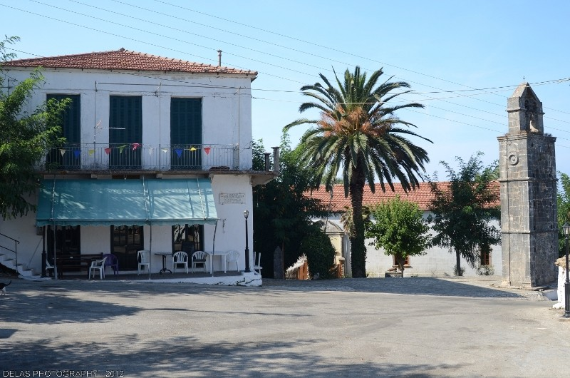
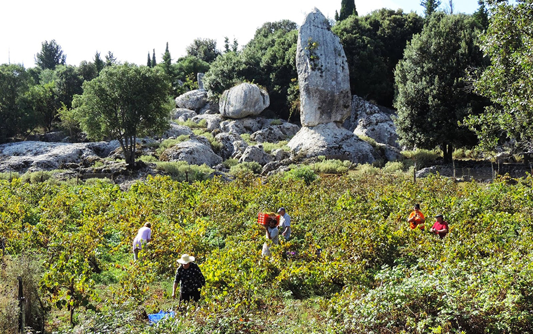
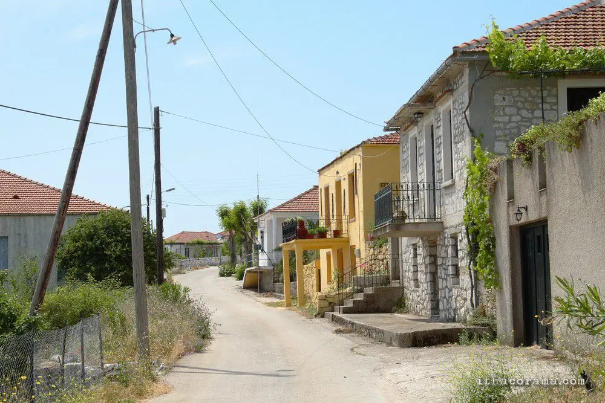

Ein mystischer Ort voller Geschichte und gewaltiger Naturphänomene
Anogi liegt hoch oben auf dem Berg Nirito auf rund 500 Metern Höhe und gehört zu den ältesten Siedlungen Ithakas. Im Zentrum des fast verlassenen, aber faszinierenden Dorfes steht die beeindruckende Kirche der Panagia, die aus dem 12. Jahrhundert stammt und im Inneren mit wunderschönen, jahrhundertealten byzantinischen Fresken geschmückt ist.
Die größte Attraktion von Anogi liegt jedoch in der kargen Landschaft, die das Dorf umgibt: Überall ragen riesige, bizarr geformte Felsmonolithen aus dem Boden. Der bekannteste von ihnen ist der Araklis, ein imposanter, freistehender Felsen von über 9 Metern Höhe, der wie eine gewaltige Skulptur aus der Erde emporragt.


